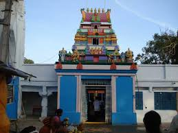

Chilkur Balaji Temple
Chilkur Balaji Temple, popularly known as the "Visa Balaji Temple", is an ancient Hindu temple located on the banks of Osman Sagar in Hyderabad. It is dedicated to Lord Balaji.
Location: Chilkur, Hyderabad, Telangana, India
Ticket Price: Free entry
Transportation: Accessible by road, well-connected by local buses and taxis.